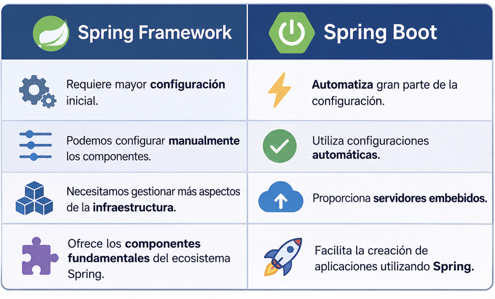
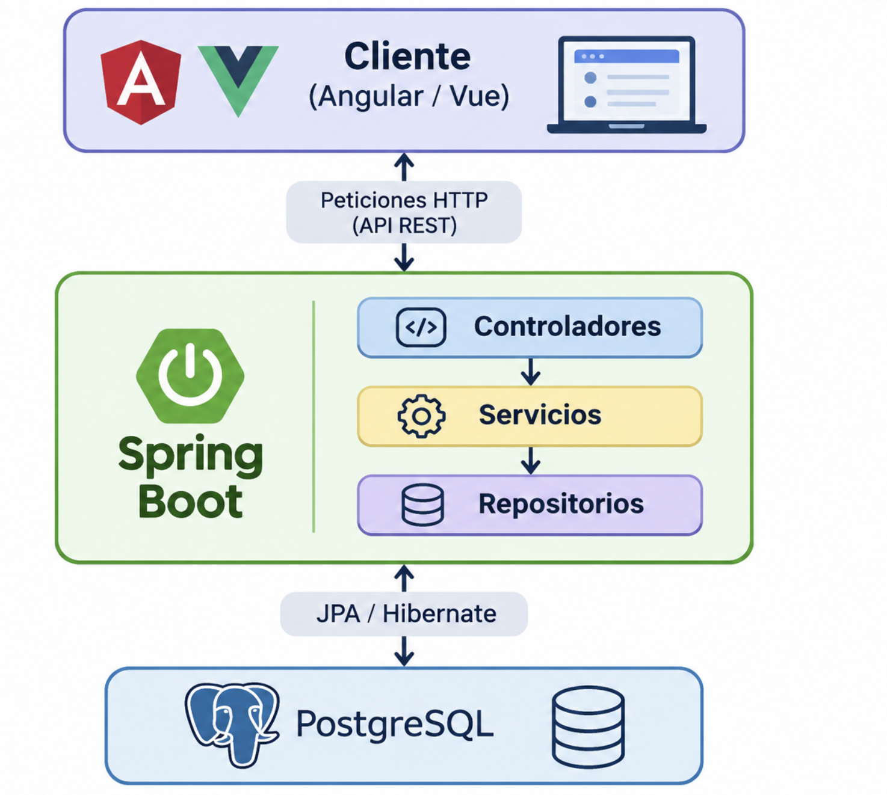
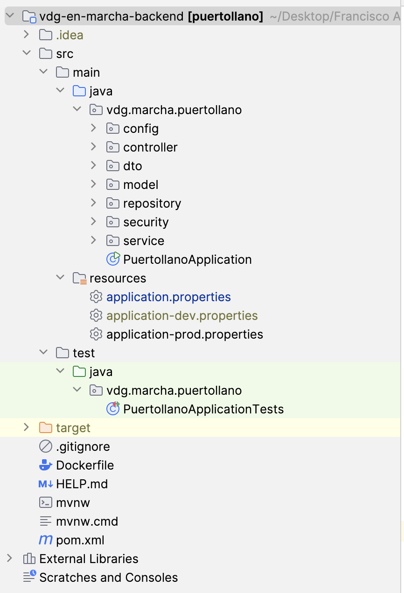

UD3. Desarrollo y despliegue de aplicaciones Back-End con Spring Boot
1. Introducción a Spring Boot y creación de proyectos
1.1. ¿Qué es Spring Framework?
Spring Framework es un framework de desarrollo para Java que proporciona herramientas y funcionalidades para construir aplicaciones empresariales, aplicaciones web y servicios.
Su principal objetivo es facilitar el desarrollo de aplicaciones mediante una arquitectura organizada, modular y fácilmente mantenible.
Entre sus principales características encontramos:
- Inyección de dependencias (DI): permite que los objetos reciban automáticamente las dependencias que necesitan, evitando tener que crearlas manualmente.
- Inversión de control (IoC): el framework se encarga de gestionar la creación y el ciclo de vida de determinados objetos.
- Programación modular: permite organizar una aplicación en diferentes componentes.
- Integración con otras tecnologías: facilita el trabajo con bases de datos, seguridad, servicios web y otras herramientas.
Spring Framework es muy potente, pero tradicionalmente requería bastante configuración para poner en marcha una aplicación.
Para simplificar este proceso apareció Spring Boot.
1.2. ¿Qué es Spring Boot?
Spring Boot es una herramienta del ecosistema Spring que permite crear aplicaciones Java de forma rápida, reduciendo considerablemente la configuración inicial.
Su objetivo es que podamos centrarnos en desarrollar la lógica de nuestra aplicación sin tener que preocuparnos constantemente por configurar todos los componentes necesarios.
Spring Boot se apoya principalmente en tres características:
1. Auto-configuración
Spring Boot analiza las dependencias que hemos añadido al proyecto y configura automáticamente los componentes que necesita.
Por ejemplo, si añadimos Spring Web, prepara los componentes necesarios para desarrollar una aplicación web y pone a nuestra disposición un servidor Tomcat embebido.
2. Starters
Son conjuntos de dependencias que permiten incorporar funcionalidades a nuestro proyecto de manera sencilla.
Por ejemplo:
spring-boot-starter-web: desarrollo de aplicaciones web y API REST.spring-boot-starter-data-jpa: acceso a bases de datos mediante JPA.spring-boot-starter-security: incorporación de mecanismos de seguridad.spring-boot-starter-test: herramientas para realizar pruebas.
En lugar de buscar e incorporar manualmente todas las librerías necesarias, podemos utilizar estos paquetes.
3. Servidores embebidos
Spring Boot incorpora servidores web como Tomcat, que permiten ejecutar nuestra aplicación directamente sin necesidad de instalar y configurar un servidor externo.
Esto facilita enormemente el desarrollo y el despliegue de aplicaciones.
Spring Framework frente a Spring Boot

Importante: Spring Boot no sustituye a Spring Framework. Se construye sobre él y facilita su utilización.
1.3. ¿Por qué utilizamos Spring Boot para desarrollar Back-End?
En esta unidad utilizaremos Spring Boot para desarrollar aplicaciones Back-End que proporcionen servicios a otras aplicaciones.
Por ejemplo, podemos desarrollar una aplicación de gestión de tareas que permita:
- Registrar usuarios.
- Crear tareas.
- Consultar tareas.
- Modificar tareas.
- Eliminar tareas.
- Almacenar información en una base de datos.
Nuestra aplicación expondrá una API REST que podrá ser consumida desde diferentes clientes, como una aplicación Angular, Vue.js o incluso una aplicación móvil.
La arquitectura que construiremos será:

A lo largo de la unidad iremos desarrollando cada una de estas partes.
1.4. Requisitos previos
Antes de comenzar a desarrollar con Spring Boot necesitamos disponer de algunas herramientas.
Java JDK
Necesitamos tener instalado el JDK de Java, ya que Spring Boot utiliza Java para ejecutar nuestras aplicaciones.
Comprobaremos la versión instalada desde una terminal:
java -version
Para los proyectos de esta unidad utilizaremos Java 21.
Entorno de desarrollo (IDE)
Podemos utilizar diferentes entornos de desarrollo:
- IntelliJ IDEA.
- Visual Studio Code.
- Eclipse.
En los ejemplos utilizaremos nuestro IDE habitual de desarrollo Java.
Maven
Maven es una herramienta de gestión y construcción de proyectos Java.
Nos permite:
- Gestionar las dependencias del proyecto.
- Descargar las librerías necesarias.
- Compilar el código.
- Ejecutar pruebas.
- Generar el archivo JAR de nuestra aplicación.
No es necesario instalar Maven globalmente si utilizamos el Maven Wrapper que genera Spring Initializr.
1.5. Creación de un proyecto con Spring Initializr
Para crear un proyecto Spring Boot utilizaremos una herramienta oficial denominada Spring Initializr.
Esta herramienta permite generar automáticamente la estructura inicial de un proyecto, configurar sus características e incorporar las dependencias que necesitemos.
Accederemos a:
Configuración del proyecto
Vamos a crear nuestro primer proyecto, que utilizaremos como base para desarrollar un gestor de tareas durante esta unidad.
Configuraremos los siguientes parámetros:
Parámetro Valor
Project Maven Language Java Spring Boot Versión estable compatible seleccionada en clase Group com.daw Artifact gestortareas Name gestortareas Description Aplicación de gestión de tareas Package name com.daw.gestortareas Packaging Jar Java 21
¿Qué significa cada parámetro?
- Project: indica la herramienta que utilizaremos para gestionar y construir el proyecto. En nuestro caso, Maven.
- Language: lenguaje de programación utilizado. Seleccionaremos Java.
- Group: identifica el grupo u organización al que pertenece el proyecto. Normalmente se utiliza una estructura similar a un dominio invertido.
- Artifact: nombre del proyecto y del artefacto que generaremos.
- Name: nombre identificativo del proyecto.
- Package name: paquete principal donde se organizarán nuestras clases Java.
- Packaging: formato en el que se empaquetará la aplicación. Utilizaremos JAR.
- Java: versión del JDK que utilizará el proyecto.
Selección de dependencias
Ahora debemos seleccionar las dependencias que queremos incorporar inicialmente.
Para nuestro primer proyecto añadiremos:
Spring Web
Esta dependencia nos permitirá desarrollar aplicaciones web y API REST.
Incluye los componentes necesarios para recibir peticiones HTTP, procesarlas y devolver respuestas.
Más adelante incorporaremos otras dependencias como Spring Data JPA, PostgreSQL y Spring Security.
Una vez configurado todo, pulsaremos el botón Generate.
Se descargará un archivo ZIP con la estructura inicial del proyecto.
1.6. Importación del proyecto en el IDE
Una vez descargado el proyecto:
- Descomprimimos el archivo ZIP.
- Abrimos nuestro entorno de desarrollo.
- Seleccionamos la opción de abrir un proyecto existente.
- Buscamos la carpeta que acabamos de descomprimir.
- Abrimos el proyecto utilizando el archivo
pom.xmlcomo referencia.
El IDE detectará que se trata de un proyecto Maven y comenzará a descargar las dependencias necesarias.
Es posible que la primera importación tarde unos minutos.
1.7. Estructura inicial del proyecto
Spring Initializr genera una estructura de carpetas similar a la siguiente:

Vamos a identificar los elementos más importantes:
pom.xml
Es el archivo de configuración de Maven.
En él se definen las dependencias del proyecto, las versiones utilizadas y los plugins necesarios para compilar y ejecutar la aplicación.
mvnw y mvnw.cmd
Son los ejecutables de Maven Wrapper.
Permiten ejecutar comandos Maven sin necesidad de tener Maven instalado globalmente en el ordenador.
mvnw: utilizado en Linux y macOS.mvnw.cmd: utilizado en Windows.
src/main/java
Contiene el código fuente Java de nuestra aplicación.
Aquí iremos creando las diferentes clases y paquetes que utilizaremos para desarrollar el Back-End.
src/main/resources
Contiene los recursos y archivos de configuración de nuestra aplicación.
Entre ellos encontraremos application.properties, donde configuraremos
parámetros como el puerto del servidor o la conexión con la base de
datos.
src/test/java
Contiene las clases destinadas a realizar pruebas automatizadas de nuestra aplicación.
1.8. Clase principal de Spring Boot
Dentro del paquete principal encontraremos una clase similar a esta:
package com.daw.gestortareas;
import org.springframework.boot.SpringApplication;
import org.springframework.boot.autoconfigure.SpringBootApplication;
@SpringBootApplication
public class GestortareasApplication {
public static void main(String[] args) {
SpringApplication.run(GestortareasApplication.class, args);
}
}
Esta es la clase principal de nuestra aplicación.
Vamos a analizar sus elementos:
@SpringBootApplication
Es una anotación fundamental de Spring Boot.
Agrupa tres funcionalidades:
@SpringBootConfiguration: identifica la clase como una fuente de configuración.@EnableAutoConfiguration: activa la configuración automática de Spring Boot.@ComponentScan: permite localizar componentes de Spring dentro de los paquetes correspondientes.
Gracias a esta anotación, Spring Boot puede detectar y configurar automáticamente los componentes de nuestra aplicación.
Método main()
Es el punto de entrada de cualquier aplicación Java.
public static void main(String[] args) {
SpringApplication.run(GestortareasApplication.class, args);
}
La instrucción SpringApplication.run() inicia el contexto de Spring,
carga la configuración y pone en marcha los componentes necesarios para
ejecutar la aplicación.
En nuestro caso, también iniciará el servidor web embebido.
1.9. Archivo application.properties
Dentro de src/main/resources encontramos el archivo:
application.properties
Este archivo permite configurar el comportamiento de nuestra aplicación sin tener que modificar el código Java.
Por ejemplo, podemos establecer el nombre de la aplicación y el puerto en el que queremos que se ejecute.
# Nombre de la aplicación
spring.application.name=gestortareas
# Puerto del servidor
server.port=8080
# Mostrar el banner de Spring Boot
spring.main.banner-mode=console
# Nivel de registro de logs
logging.level.root=INFO
Vamos a explicar las propiedades:
Propiedad Descripción
spring.application.name Nombre identificativo de la
aplicación.
server.port Puerto donde escuchará el servidor
web.
spring.main.banner-mode Controla la visualización del
banner de inicio.
logging.level.root Establece el nivel general de los
registros de la aplicación.
Por defecto, Spring Boot utiliza el puerto 8080.
Si queremos que nuestra aplicación utilice otro puerto, podemos modificarlo:
server.port=9090
En ese caso, nuestra aplicación estará disponible en el puerto 9090.
Más adelante utilizaremos este archivo para configurar la conexión con PostgreSQL y otros componentes.
1.10. Ejecución de nuestra primera aplicación
Una vez importado el proyecto, podemos ejecutarlo de diferentes maneras.
Desde el IDE
Buscamos la clase GestortareasApplication y ejecutamos su método
main().
Desde la terminal
También podemos situarnos en la carpeta raíz del proyecto y utilizar Maven Wrapper.
En Linux y macOS:
./mvnw spring-boot:run
En Windows:
mvnw.cmd spring-boot:run
Spring Boot comenzará a inicializar la aplicación y mostrará información en la consola.
Entre los mensajes podremos encontrar uno similar a:
Tomcat started on port 8080 (http)
Started GestortareasApplication
Esto indica que nuestra aplicación se ha iniciado correctamente y que el servidor Tomcat está escuchando en el puerto 8080.
Podemos acceder desde el navegador a:
Como todavía no hemos creado ningún controlador ni definido ninguna ruta, Spring Boot no encontrará un recurso que mostrar y podremos obtener un error 404.
Esto no significa que la aplicación esté mal ejecutada. El servidor está funcionando, pero todavía no hemos programado ningún endpoint.
En el siguiente apartado aprenderemos a crear controladores para recibir peticiones HTTP y devolver respuestas.